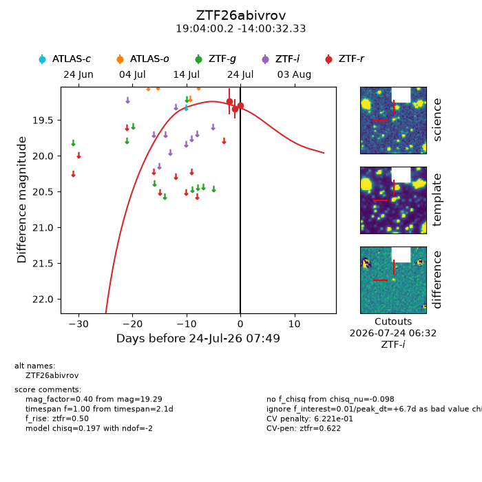
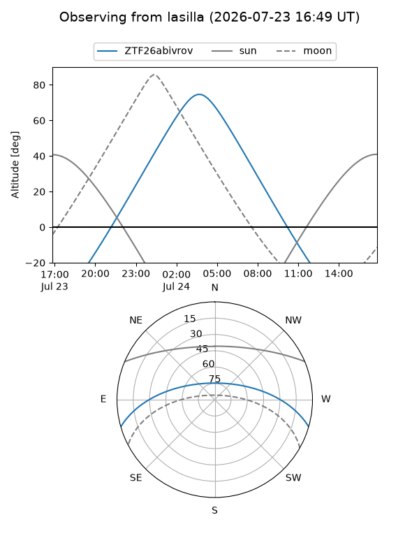
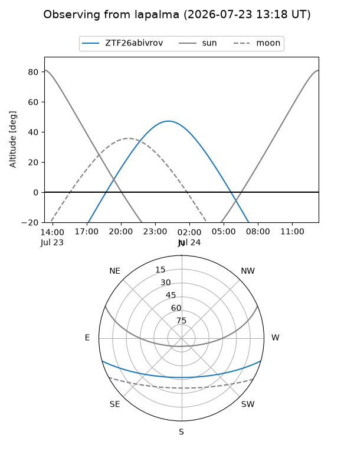
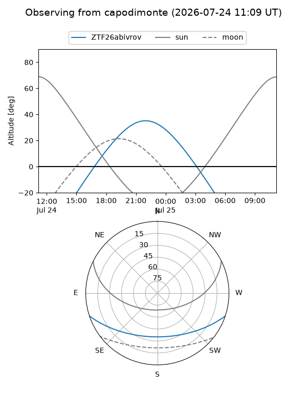
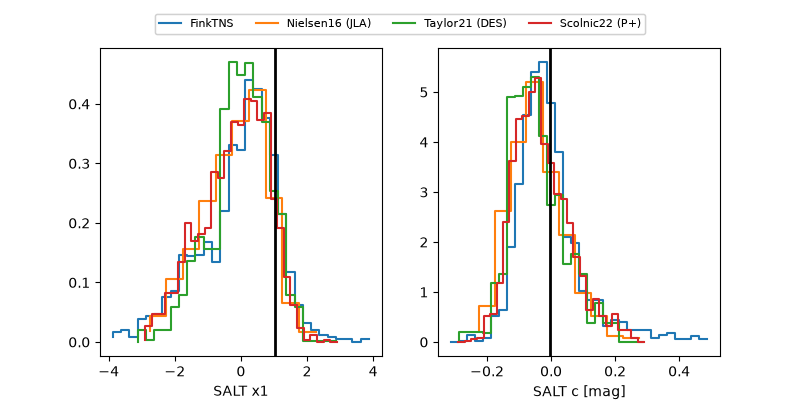

ZTF26abivrov
Target ZTF26abivrov at 2026-07-24 07:50
Aliases and brokers:
FINK-ZTF: ztf.fink-portal.org/ZTF26abivrov
Lasair-ZTF: lasair-ztf.lsst.ac.uk/objects/ZTF26abivrov
ALeRCE-ZTF: alerce.online/object/ZTF26abivrov
Direct TNS query: direct search
alt names
ZTF26abivrov (ztf,fink_ztf)
Coordinates:
equatorial (ra, dec) = 286.0007,-14.00898
equatorial (HMS+DMS) = 19:04:00.16,-14:00:32.33
galactic (l, b) = (21.7677,-9.07340)
Flags:
peak dt: +6.7
likely cv: !!
Photometry:
last ztfr=19.29
3 ztfr detections
Lightcurve

Visibility



Additional plots
